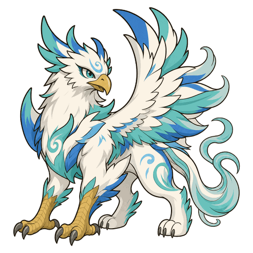
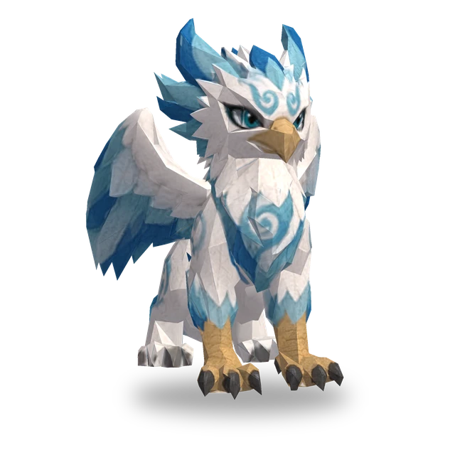
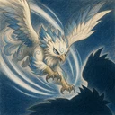

Стрімке піке
Перелітає за спину ворога з найменшим поточним здоров’ям не далі ніж 4 клітинки і завдає йому фізичної шкоди в розмірі 400% атаки. Накладає на ціль мітку: протягом 4 с шкода, яку вона отримує, зростає на 15%.

3D
| Lv. | Здоров’я | Атака | Сила вмінь |
|---|---|---|---|
| 1 | 270 | 26 | 26 |
| 2 | 311 | 30 | 30 |
| 3 | 357 | 34 | 34 |
| 4 | 411 | 40 | 40 |
| 5 | 472 | 45 | 45 |
| 6 | 543 | 52 | 52 |
| 7 | 625 | 60 | 60 |
| 8 | 718 | 69 | 69 |
| 9 | 826 | 80 | 80 |
| 10 | 950 | 91 | 91 |
| 11 | 1092 | 105 | 105 |
Здоров’я, атака й сила вмінь зростають на 15% на кожному рівні (до Lv.11).
No.013
Перелітає за спину ворога з найменшим здоров’ям, завдає йому фізичної шкоди й накладає мітку, через яку той отримує більше шкоди, а до цілі наближається перельотами через кілька клітинок.
Перелітає за спину ворога з найменшим поточним здоров’ям не далі ніж 4 клітинки і завдає йому фізичної шкоди в розмірі 400% атаки. Накладає на ціль мітку: протягом 4 с шкода, яку вона отримує, зростає на 15%.

Наближаючись до цілі, пересувається перельотами; довжина одного перельоту — 2 клітинки.